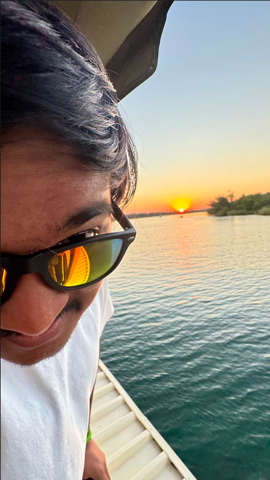
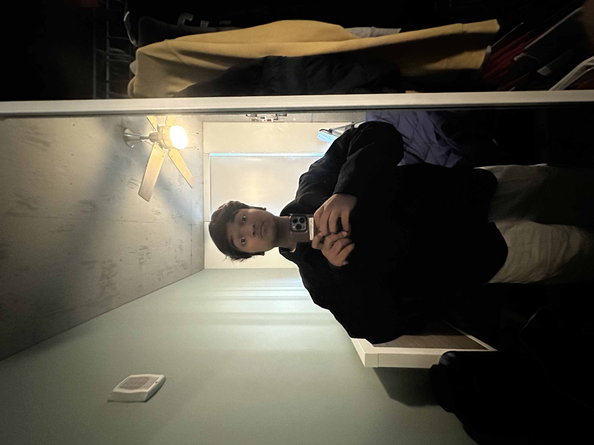

About Me

Arin Chandra
I'm Arin, a Computer Science and Information Science major here at the university. My favorite tech thing right now is biometrics, which is a massive step forward for cybersecurity. My hobbies include playing video games, going to the gym, making music, and learning new things.

Yalitza Lopez
I am an Information Science major whose favorite tech thing is medical technology because of the progress we have seen with it in the past few years. Hobbies are sleeping and watching TV (Netflix).

Aleena Zehra
An Information Science and Psychology major at the university who is taking this class to both fulfill the requirement and learn more about intersectionality and identity.